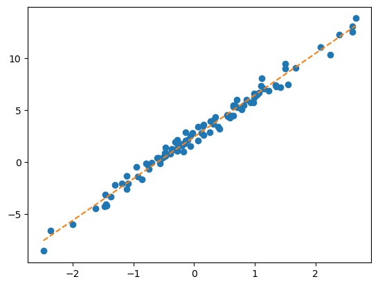

#{{<video https://youtu.be/playlist?list=PLQqh36zP38-xfh-AQQI0B_GONOjgj9DCi&si=uWImDc1bYBoNqCB_ >}}10wk-2: 추천시스템 (1) – optimizer 사용 고급, 추천시스템의 학습

1. 강의영상
2. Imports
import torch
import pandas as pd
import matplotlib.pyplot as plt3. 예비학습: optimizer 사용 고급
- 주어진 자료가 아래와 같다고 하자.
torch.manual_seed(43052)
x,_ = torch.randn(100).sort()
x = x.reshape(-1,1)
ones= torch.ones(100).reshape(-1,1)
X = torch.concat([ones,x],axis=-1)
ϵ = torch.randn(100).reshape(-1,1)*0.5
y = 2.5+ 4*x + ϵplt.plot(x,y,'o')
- 문제1: 아래와 같이 최초의 직선을 생성하였다.
What = torch.tensor([[-5.0],[10.0]],requires_grad=True)plt.plot(x,y,'o')
plt.plot(x,X@What.data,'--')
torch.optim.SGD를 이용하여 What을 update하라. 학습률은 0.1로 설정하고 30회 update하라.
# net
loss_fn = torch.nn.MSELoss()
optimizr = torch.optim.SGD([What],lr=0.1)
#--#
for epoc in range(30):
# step1
yhat = X@What
# step2
loss = loss_fn(yhat,y)
# step3
loss.backward()
# step4
optimizr.step()
optimizr.zero_grad()plt.plot(x,y,'o')
plt.plot(x,X@What.data,'--')
- 문제2: 아래와 같이 최초의 직선을 생성하였다.
w = torch.tensor(10.0,requires_grad=True)
b = torch.tensor(-5.0,requires_grad=True)plt.plot(x,y,'o')
plt.plot(x,(x*w + b).data,'--')
torch.optim.SGD를 이용하여 What을 update하라. 학습률은 0.1로 설정하고 30회 update하라.
# net
loss_fn = torch.nn.MSELoss()
optimizr = torch.optim.SGD([w,b],lr=0.1)
#--#
for epoc in range(30):
# step1
yhat = x*w+b
# step2
loss = loss_fn(yhat,y)
# step3
loss.backward()
# step4
optimizr.step()
optimizr.zero_grad()plt.plot(x,y,'o')
plt.plot(x,(x*w + b).data,'--')
4. 추천시스템의 학습전략
ref: https://namu.wiki/w/나는%20SOLO
A. Data: 나는 SOLO
- Data
df_view = pd.read_csv('https://raw.githubusercontent.com/guebin/DL2024/main/posts/solo.csv',index_col=0)
df_view| 영식(IN) | 영철(IN) | 영호(IS) | 광수(IS) | 상철(EN) | 영수(EN) | 규빈(ES) | 다호(ES) | |
|---|---|---|---|---|---|---|---|---|
| 옥순(IN) | NaN | 4.02 | 3.45 | 3.42 | 0.84 | 1.12 | 0.43 | 0.49 |
| 영자(IN) | 3.93 | 3.99 | 3.63 | 3.43 | 0.98 | 0.96 | 0.52 | NaN |
| 정숙(IS) | 3.52 | 3.42 | 4.05 | 4.06 | 0.39 | NaN | 0.93 | 0.99 |
| 영숙(IS) | 3.43 | 3.57 | NaN | 3.95 | 0.56 | 0.52 | 0.89 | 0.89 |
| 순자(EN) | 1.12 | NaN | 0.59 | 0.43 | 4.01 | 4.16 | 3.52 | 3.38 |
| 현숙(EN) | 0.94 | 1.05 | 0.32 | 0.45 | 4.02 | 3.78 | NaN | 3.54 |
| 서연(ES) | 0.51 | 0.56 | 0.88 | 0.89 | 3.50 | 3.64 | 4.04 | 4.10 |
| 보람(ES) | 0.48 | 0.51 | 1.03 | NaN | 3.52 | 4.00 | 3.82 | NaN |
| 하니(I) | 4.85 | 4.82 | NaN | 4.98 | 4.53 | 4.39 | 4.45 | 4.52 |
- 데이터를 이해할 때 필요한 가정들 – 제가 마음대로 설정했어요..
- 궁합이 잘맞으면 5점, 잘 안맞으면 0점 이다.
- MBTI 성향에 따라서 궁함의 정도가 다르다. 특히 I/E의 성향일치가 중요하다.
- 하니는 모든 사람들과 대체로 궁합이 잘 맞는다.
- 하니는 I성향의 사람들과 좀 더 잘 맞는다.
B. Fit / Predict
- 목표: NaN을 추정
- 수동추론: 그럴듯한 숫자를 추정해보자.
- 옥순(IN),영식(IN)의 궁합은? \(\to\) 둘다 IN 이므로 잘 맞을듯 \(\to\) 4.0 정도?
- 영자(IN),다호(ES)의 궁합은? \(\to\) 잘 안맞을듯
- 하니(I),영호(ES)의 궁합은? \(\to\) 하니는 모두 좋아하므로 기본적으로 4.5 정도 + 하니는 I성향이므로 더 잘 맞을듯 \(\to\) 거의 4.9 아닐까?
- 좀 더 체계적인 추론 전략: (1) 사람들이 가지고 있는 성향 (2) 사람자체의 절대매력을 수치화 하자.
- 옥순(IN)의 IN성향, 옥순(IN)의 매력 = (0.90, 0.65), 1.01
- 영식(IN)의 IN성향, 영식(IN)의 매력 = (1.00, 0.70), 1.00
- 영자(IN)의 IN성향, 영자(IN)의 매력 = (0.95 ,0.62), 0.95
- 다호(ES)의 IN성향, 다호(ES)의 매력 = (-1.00 ,-0.70), 1.05
- 하니(I)의 IN성향, 하니(I)의 매력 = (1,0), 3.00
- 영호(IS)의 IS성향, 영호(IS)의 매력 = (0.98 , -0.7), 0.95
(1) 옥순(IN)과 영식(IN)의 궁합 \(\approx\) 옥순의I성향\(\times\)영식의I성향 \(+\) 옥순의N성향\(\times\)영식의N성향 \(+\) 옥순의매력 \(+\) 영식의매력
옥순성향 = torch.tensor([0.90,0.65]).reshape(2,1)
옥순매력 = torch.tensor([1.01]).reshape(1,1)
영식성향 = torch.tensor([0.95,0.62]).reshape(2,1)
영식매력 = torch.tensor([1.00]).reshape(1,1)
((옥순성향*영식성향).sum() + 옥순매력 + 영식매력) # 옥순과 영식의 궁합: a ∘ b 로 내적구함 + 이후에 매력을 더함
(옥순성향.T @ 영식성향 + 옥순매력 + 영식매력) # 옥순과 영식의 궁합: a.T @ b 로 내적구함 + 이후에 매력을 더함tensor([[3.2680]])(2) 영자(IN)와 다호(ES)의 궁합 \(\approx\) 영자I성향\(\times\)다호I성향 \(+\) 영자N성향\(\times\)다호의N성향 \(+\) 영자의매력 \(+\) 다호의매력
영자성향 = torch.tensor([1.00,0.70]).reshape(2,1)
영자매력 = torch.tensor([0.95]).reshape(1,1)
다호성향 = torch.tensor([-1.00,-0.82]).reshape(2,1)
다호매력 = torch.tensor([1.05]).reshape(1,1)
((영자성향*다호성향).sum() + 영자성향 + 다호성향)
(영자성향.T @ 다호성향 + 영자매력 + 다호매력)tensor([[0.4260]])1.5*1.5 + 0.7*0.7 + 23.49-1.4*1.4 - 0.65*0.65 + 2-0.38249999999999984(3) 하니(I)와 영호(IS)의 궁합 \(\approx\) 하니I성향\(\times\)영호I성향 \(+\) 하니N성향\(\times\)영호의N성향 \(+\) 하니의매력 \(+\) 영호의매력
하니성향 = torch.tensor([1.00,0.00]).reshape(2,1)
하니매력 = torch.tensor([3.00]).reshape(1,1)
영호성향 = torch.tensor([0.98,-0.70]).reshape(2,1)
영호매력 = torch.tensor([0.95]).reshape(1,1)
((하니성향*영호성향).sum() + 하니매력 + 영호매력)
(하니성향.T @ 영호성향 + 하니매력 + 영호매력)tensor([[4.9300]])전체적으로 그럴싸함
- 전체 사용자의 설정값
옥순성향 = torch.tensor([1.22,0.49]).reshape(1,2)
영자성향 = torch.tensor([1.17,0.44]).reshape(1,2)
정숙성향 = torch.tensor([1.21,-0.45]).reshape(1,2)
영숙성향 = torch.tensor([1.20,-0.50]).reshape(1,2)
순자성향 = torch.tensor([-1.20,0.51]).reshape(1,2)
현숙성향 = torch.tensor([-1.23,0.48]).reshape(1,2)
서연성향 = torch.tensor([-1.20,-0.48]).reshape(1,2)
보람성향 = torch.tensor([-1.19,-0.49]).reshape(1,2)
하니성향 = torch.tensor([0.2,0]).reshape(1,2)
W = torch.concat([옥순성향,영자성향,정숙성향,영숙성향,순자성향,현숙성향,서연성향,보람성향,하니성향])
b1 = torch.tensor([1.21,1.25,1.10,1.11,1.12,1.13,1.14,1.12,3.6]).reshape(-1,1)
W,b1(tensor([[ 1.2200, 0.4900],
[ 1.1700, 0.4400],
[ 1.2100, -0.4500],
[ 1.2000, -0.5000],
[-1.2000, 0.5100],
[-1.2300, 0.4800],
[-1.2000, -0.4800],
[-1.1900, -0.4900],
[ 0.2000, 0.0000]]),
tensor([[1.2100],
[1.2500],
[1.1000],
[1.1100],
[1.1200],
[1.1300],
[1.1400],
[1.1200],
[3.6000]]))영식성향 = torch.tensor([1.20,0.5]).reshape(1,2)
영철성향 = torch.tensor([1.22,0.45]).reshape(1,2)
영호성향 = torch.tensor([1.23,-0.7]).reshape(1,2)
광수성향 = torch.tensor([1.21,-0.6]).reshape(1,2)
상철성향 = torch.tensor([-1.28,0.6]).reshape(1,2)
영수성향 = torch.tensor([-1.24,0.5]).reshape(1,2)
규빈성향 = torch.tensor([-1.20,-0.5]).reshape(1,2)
다호성향 = torch.tensor([-1.22,-0.6]).reshape(1,2)
M = torch.concat([영식성향,영철성향,영호성향,광수성향,상철성향,영수성향,규빈성향,다호성향]) # 각 column은 남성출연자의 성향을 의미함
b2 = torch.tensor([1.2,1.10,1.11,1.25,1.18,1.11,1.15,1.15]).reshape(-1,1)
M,b2(tensor([[ 1.2000, 0.5000],
[ 1.2200, 0.4500],
[ 1.2300, -0.7000],
[ 1.2100, -0.6000],
[-1.2800, 0.6000],
[-1.2400, 0.5000],
[-1.2000, -0.5000],
[-1.2200, -0.6000]]),
tensor([[1.2000],
[1.1000],
[1.1100],
[1.2500],
[1.1800],
[1.1100],
[1.1500],
[1.1500]]))- 아래의 행렬곱 관찰
W @ M.T + (b1 + b2.T)tensor([[4.1190, 4.0189, 3.4776, 3.6422, 1.1224, 1.0522, 0.6510, 0.5776],
[4.0740, 3.9754, 3.4911, 3.6517, 1.1964, 1.1292, 0.7760, 0.7086],
[3.5270, 3.4737, 4.0133, 4.0841, 0.4612, 0.4846, 1.0230, 1.0438],
[3.5000, 3.4490, 4.0460, 4.1120, 0.4540, 0.4820, 1.0700, 1.0960],
[1.1350, 0.9855, 0.3970, 0.6120, 4.1420, 3.9730, 3.4550, 3.4280],
[1.0940, 0.9454, 0.3911, 0.6037, 4.1724, 4.0052, 3.5160, 3.4926],
[0.6600, 0.5600, 1.1100, 1.2260, 3.5680, 3.4980, 3.9700, 4.0420],
[0.6470, 0.5477, 1.1093, 1.2241, 3.5292, 3.4606, 3.9430, 4.0158],
[5.0400, 4.9440, 4.9560, 5.0920, 4.5240, 4.4620, 4.5100, 4.5060]])—저거 따져보자—
\({\bf W} = \begin{bmatrix} 1.2200 & 0.4900 \\ 1.1700 & 0.4400 \\ 1.2100 & -0.4500 \\ 1.2000 & -0.5000 \\ -1.2000 & 0.5100 \\ -1.2300 & 0.4800 \\ -1.2000 & -0.4800 \\ -1.1900 & -0.4900 \\ 0.2000 & 0.0000 \end{bmatrix}\)
\({\bf M}^\top = \begin{bmatrix} 1.2000 & 1.2200 & 1.2300 & 1.2100 & -1.2800 & -1.2400 & -1.2000 & -1.2200 \\ 0.5000 & 0.4500 & -0.7000 & -0.6000 & 0.6000 & 0.5000 & -0.5000 & -0.6000 \end{bmatrix}\)
\({\bf W} @ {\bf M}^\top = \begin{bmatrix} 1.7090 & 1.7089 & 1.1576 & 1.1822 & -1.2676 & -1.2678 & -1.7090 & -1.7824 \\ 1.6240 & 1.6254 & 1.1311 & 1.1517 & -1.2336 & -1.2308 & -1.6240 & -1.6914 \\ 1.2270 & 1.2737 & 1.8033 & 1.7341 & -1.8188 & -1.7254 & -1.2270 & -1.2062 \\ 1.1900 & 1.2390 & 1.8260 & 1.7520 & -1.8360 & -1.7380 & -1.1900 & -1.1640 \\ -1.1850 & -1.2345 & -1.8330 & -1.7580 & 1.8420 & 1.7430 & 1.1850 & 1.1580 \\ -1.2360 & -1.2846 & -1.8489 & -1.7763 & 1.8624 & 1.7652 & 1.2360 & 1.2126 \\ -1.6800 & -1.6800 & -1.1400 & -1.1640 & 1.2480 & 1.2480 & 1.6800 & 1.7520 \\ -1.6730 & -1.6723 & -1.1207 & -1.1459 & 1.2292 & 1.2306 & 1.6730 & 1.7458 \\ 0.2400 & 0.2440 & 0.2460 & 0.2420 & -0.2560 & -0.2480 & -0.2400 & -0.2440 \end{bmatrix}\)
\(\begin{align*} bias =~& \begin{bmatrix} 1.2100 \\ 1.2500 \\ 1.1000 \\ 1.1100 \\ 1.1200 \\ 1.1300 \\ 1.1400 \\ 1.1200 \\ 3.6000 \end{bmatrix} +\begin{bmatrix} 1.2000 & 1.1000 & 1.1100 & 1.2500 & 1.1800 & 1.1100 & 1.1500 & 1.1500 \end{bmatrix}\\ \\ =~& \begin{bmatrix} 2.4100 & 2.3100 & 2.3200 & 2.4600 & 2.3900 & 2.3200 & 2.3600 & 2.3600 \\ 2.4500 & 2.3500 & 2.3600 & 2.5000 & 2.4300 & 2.3600 & 2.4000 & 2.4000 \\ 2.3000 & 2.2000 & 2.2100 & 2.3500 & 2.2800 & 2.2100 & 2.2500 & 2.2500 \\ 2.3100 & 2.2100 & 2.2200 & 2.3600 & 2.2900 & 2.2200 & 2.2600 & 2.2600 \\ 2.3200 & 2.2200 & 2.2300 & 2.3700 & 2.3000 & 2.2300 & 2.2700 & 2.2700 \\ 2.3300 & 2.2300 & 2.2400 & 2.3800 & 2.3100 & 2.2400 & 2.2800 & 2.2800 \\ 2.3400 & 2.2400 & 2.2500 & 2.3900 & 2.3200 & 2.2500 & 2.2900 & 2.2900 \\ 2.3200 & 2.2200 & 2.2300 & 2.3700 & 2.3000 & 2.2300 & 2.2700 & 2.2700 \\ 4.8000 & 4.7000 & 4.7100 & 4.8500 & 4.7800 & 4.7100 & 4.7500 & 4.7500 \end{bmatrix} \end{align*}\)
\({\bf W} @ {\bf M}^\top + bias = \begin{bmatrix} 4.1190 & 4.0189 & 3.4776 & 3.6422 & 1.1224 & 1.0522 & 0.6510 & 0.5776 \\ 4.0740 & 3.9754 & 3.4911 & 3.6517 & 1.1964 & 1.1292 & 0.7760 & 0.7086 \\ 3.5270 & 3.4737 & 4.0133 & 4.0841 & 0.4612 & 0.4846 & 1.0230 & 1.0438 \\ 3.5000 & 3.4490 & 4.0460 & 4.1120 & 0.4540 & 0.4820 & 1.0700 & 1.0960 \\ 1.1350 & 0.9855 & 0.3970 & 0.6120 & 4.1420 & 3.9730 & 3.4550 & 3.4280 \\ 1.0940 & 0.9454 & 0.3911 & 0.6037 & 4.1724 & 4.0052 & 3.5160 & 3.4926 \\ 0.6600 & 0.5600 & 1.1100 & 1.2260 & 3.5680 & 3.4980 & 3.9700 & 4.0420 \\ 0.6470 & 0.5477 & 1.1093 & 1.2241 & 3.5292 & 3.4606 & 3.9430 & 4.0158 \\ 5.0400 & 4.9440 & 4.9560 & 5.0920 & 4.5240 & 4.4620 & 4.5100 & 4.5060 \end{bmatrix}\)
- \({\bf W} @ {\bf M}^\top + bias\) 의 (1,1)의 원소값을 계산해보면 아래와 같다.
- 옥순의I성향\(\times\)영식의I성향 \(+\) 옥순의N성향\(\times\)영식의N성향 \(+\) 옥순의매력 \(+\) 영식의매력 = 4.1190
- \(1.220 \times 1.2000 + 0.4900 \times 0.5000 + 1.2100 + 2.4100 = 4.1190\)
- 궁합매트릭스: \({\bf W} @ {\bf M}^\top + bias\)를 계산하면 (9,8) 인 행렬이 나올텐데 이 행렬의 \((i,j)\)의 원소는 \(i\)-th 여성출연자와 \(j\)-th 남성출연자가 얼마나 잘 맞는지를 나타내는 숫자가 된다. (숫자가 높을수록 잘 맞음) 편의상 이 수업에서는 이 매트릭스를 “궁합매트릭스” 라고 정의하자.
- 주어진 자료와 우리가 임의로 만든 궁합매트릭스를 비교해보자.
print(f"주어진자료:\n{np.array(df_view)}")
print(f"궁합매트릭스:\n{np.array(W @ M.T + b1 + b2.T).round(2)}")주어진자료:
[[ nan 4.02 3.45 3.42 0.84 1.12 0.43 0.49]
[3.93 3.99 3.63 3.43 0.98 0.96 0.52 nan]
[3.52 3.42 4.05 4.06 0.39 nan 0.93 0.99]
[3.43 3.57 nan 3.95 0.56 0.52 0.89 0.89]
[1.12 nan 0.59 0.43 4.01 4.16 3.52 3.38]
[0.94 1.05 0.32 0.45 4.02 3.78 nan 3.54]
[0.51 0.56 0.88 0.89 3.5 3.64 4.04 4.1 ]
[0.48 0.51 1.03 nan 3.52 4. 3.82 nan]
[4.85 4.82 nan 4.98 4.53 4.39 4.45 4.52]]
궁합매트릭스:
[[4.12 4.02 3.48 3.64 1.12 1.05 0.65 0.58]
[4.07 3.98 3.49 3.65 1.2 1.13 0.78 0.71]
[3.53 3.47 4.01 4.08 0.46 0.48 1.02 1.04]
[3.5 3.45 4.05 4.11 0.45 0.48 1.07 1.1 ]
[1.14 0.99 0.4 0.61 4.14 3.97 3.46 3.43]
[1.09 0.95 0.39 0.6 4.17 4.01 3.52 3.49]
[0.66 0.56 1.11 1.23 3.57 3.5 3.97 4.04]
[0.65 0.55 1.11 1.22 3.53 3.46 3.94 4.02]
[5.04 4.94 4.96 5.09 4.52 4.46 4.51 4.51]]- 우리의 전략
\({\bf W} @ {\bf M}^\top + bias\)의 값과
df_view의 값이nan을 제외한 곳에서 거의 비슷하게 되도록 \({\bf W}\), \({\bf M}\), \(bias\)를 잘 때려맞추면 되는것 아니야?1을 만족하는 \({\bf W}\), \({\bf M}\), \(bias\)를 찾았으면 그 숫자들을 이용하여
df_view의nan을 추정한다.
- 따라서 모형은 아래와 같이 볼 수 있다.
\[{\tt df\_view} \approx {\bf W}@{\bf M}^\top + bias\]
- 아래의 정보를 참고하여 위의 수식을 다시 정리하면..
pd.DataFrame(pd.DataFrame(torch.concat([W,b1],axis=1)))\
.set_axis(['옥순(IN)','영자(IN)','정숙(IS)','영숙(IS)','순자(EN)','현숙(EN)','서연(ES)','보람(ES)','하니(I)'])\
.set_axis(['I성향','N성향','bias'],axis=1)| I성향 | N성향 | bias | |
|---|---|---|---|
| 옥순(IN) | 1.22 | 0.49 | 1.21 |
| 영자(IN) | 1.17 | 0.44 | 1.25 |
| 정숙(IS) | 1.21 | -0.45 | 1.10 |
| 영숙(IS) | 1.20 | -0.50 | 1.11 |
| 순자(EN) | -1.20 | 0.51 | 1.12 |
| 현숙(EN) | -1.23 | 0.48 | 1.13 |
| 서연(ES) | -1.20 | -0.48 | 1.14 |
| 보람(ES) | -1.19 | -0.49 | 1.12 |
| 하니(I) | 0.20 | 0.00 | 3.60 |
pd.DataFrame(pd.DataFrame(torch.concat([M,b2],axis=1)))\
.set_axis(['영식(IN)','영철(IN)','영호(IS)','광수(IS)','상철(EN)','영수(ES)','규빈(ES)','다호(ES)'])\
.set_axis(['I성향','N성향','bias'],axis=1)| I성향 | N성향 | bias | |
|---|---|---|---|
| 영식(IN) | 1.20 | 0.50 | 1.20 |
| 영철(IN) | 1.22 | 0.45 | 1.10 |
| 영호(IS) | 1.23 | -0.70 | 1.11 |
| 광수(IS) | 1.21 | -0.60 | 1.25 |
| 상철(EN) | -1.28 | 0.60 | 1.18 |
| 영수(ES) | -1.24 | 0.50 | 1.11 |
| 규빈(ES) | -1.20 | -0.50 | 1.15 |
| 다호(ES) | -1.22 | -0.60 | 1.15 |
df_view| 영식(IN) | 영철(IN) | 영호(IS) | 광수(IS) | 상철(EN) | 영수(EN) | 규빈(ES) | 다호(ES) | |
|---|---|---|---|---|---|---|---|---|
| 옥순(IN) | NaN | 4.02 | 3.45 | 3.42 | 0.84 | 1.12 | 0.43 | 0.49 |
| 영자(IN) | 3.93 | 3.99 | 3.63 | 3.43 | 0.98 | 0.96 | 0.52 | NaN |
| 정숙(IS) | 3.52 | 3.42 | 4.05 | 4.06 | 0.39 | NaN | 0.93 | 0.99 |
| 영숙(IS) | 3.43 | 3.57 | NaN | 3.95 | 0.56 | 0.52 | 0.89 | 0.89 |
| 순자(EN) | 1.12 | NaN | 0.59 | 0.43 | 4.01 | 4.16 | 3.52 | 3.38 |
| 현숙(EN) | 0.94 | 1.05 | 0.32 | 0.45 | 4.02 | 3.78 | NaN | 3.54 |
| 서연(ES) | 0.51 | 0.56 | 0.88 | 0.89 | 3.50 | 3.64 | 4.04 | 4.10 |
| 보람(ES) | 0.48 | 0.51 | 1.03 | NaN | 3.52 | 4.00 | 3.82 | NaN |
| 하니(I) | 4.85 | 4.82 | NaN | 4.98 | 4.53 | 4.39 | 4.45 | 4.52 |
—이런식으로?—
| W | M | 여성특징 | 남성특징 | I궁합 | N궁합 | bias | yhat | y |
|---|---|---|---|---|---|---|---|---|
| 옥순(IN) | 영철(IN) | 1.22, 0.49 | 1.22, 0.45 | 1.48841 | 0.22052 | 2.313 | 4.0189 | 4.02 |
| 옥순(IN) | 영호(IS) | 1.22, 0.49 | 1.23, -0.7 | 1.15764 | -0.34235 | 2.326 | 3.4776 | 3.45 |
| … | … | … | … | … | … |
1 1.22 *1.22 = 1.4884
2 0.49 * 0.50 = 0.2205
3 1.21+1.1 = 2.31
4 1.22 *1.23 = 1.5006
5 0.49 * 0.7 = -0.3423
6 1.21+1.11 = 2.32
- 걱정1: 5.0이 넘는 값도 있네? 잘못잡으면 음수가 나올지도?
- 걱정2: 저러한 yhat (4.0189, 3.4776)을 만드는게 꼭 저 조합만 있는게 아님. 당장에 남성의 바이어스에 일괄적으로 -2를 넣고 여성의 바이어스에 일괄적으로 +2를 해도 성립함.
- (걱정은 뒤로 하고) yhat \(\approx\) y 를 만족하도록 해보자!
yhat은 어떻게 구하지? (여성특징\(\otimes\)남성특징).sum() + bias?- 그럼 여성특징,남성특징,여성bias(=여성매력),남성bias(=남성매력)는 어떻게 구하지?? 생각해보니까 데이터에서 주어진건 아니잖아??
- 여성특징,남성특징, 여성bais,남성bais 를 어떻게 만들지?
- 그전엔 어떻게 했지??
W을 보고 적당히 특징을 상상하고여성특징,여성bias의 값을 때려넣음 +M를 보고 적당히 특징을 상상하고남성특징,남성bias의 값을 채워 넣음. - 자동화하려면?
W\(\to\)여성특징,W\(\to\)여성bias,M\(\to\)남성특징,M\(\to\)남성bias인 함수를 만들자.
- 앞으로 할일1: 아래와 같은 함수들을 만들자.
- 옥순 \(\to\) 옥순의 특징 = (1.22, 0.49)
- 옥순 \(\to\) 옥순의 매력 = 1.22
- 영철 \(\to\) 영철의 특징 = (1.22, 0.45)
- 영철 \(\to\) 영철의 매력 = 1.22 …
- 앞으로 할일2: 우리가 익숙한 셋팅 (step1~4)
여성특징,여성bias,남성특징,남성bias\(\to\)yhat를 수행y\(\approx\)yhat인지 체크:loss = loss_fn(yhat,y)loss.backward()- 더 나은
여성특징,여성bias,남성특징,남성bias로 update!
C. 할일1의 구현
- dataframe의 변형
df_train = df_view.stack().reset_index().set_axis(['W','M','y'],axis=1)
df_train[:5]| W | M | y | |
|---|---|---|---|
| 0 | 옥순(IN) | 영철(IN) | 4.02 |
| 1 | 옥순(IN) | 영호(IS) | 3.45 |
| 2 | 옥순(IN) | 광수(IS) | 3.42 |
| 3 | 옥순(IN) | 상철(EN) | 0.84 |
| 4 | 옥순(IN) | 영수(EN) | 1.12 |
- 이름을 숫자화
w = {'옥순(IN)':0, '영자(IN)':1, '정숙(IS)':2, '영숙(IS)':3, '순자(EN)':4, '현숙(EN)':5, '서연(ES)':6, '보람(ES)':7, '하니(I)':8}
m = {'영식(IN)':0, '영철(IN)':1, '영호(IS)':2, '광수(IS)':3, '상철(EN)':4, '영수(EN)':5, '규빈(ES)':6, '다호(ES)':7}df_train['X1'] = df_train['W'].map(w)
df_train['X2'] = df_train['M'].map(m)
df_train[::3]| W | M | y | X1 | X2 | |
|---|---|---|---|---|---|
| 0 | 옥순(IN) | 영철(IN) | 4.02 | 0 | 1 |
| 3 | 옥순(IN) | 상철(EN) | 0.84 | 0 | 4 |
| 6 | 옥순(IN) | 다호(ES) | 0.49 | 0 | 7 |
| 9 | 영자(IN) | 영호(IS) | 3.63 | 1 | 2 |
| 12 | 영자(IN) | 영수(EN) | 0.96 | 1 | 5 |
| 15 | 정숙(IS) | 영철(IN) | 3.42 | 2 | 1 |
| 18 | 정숙(IS) | 상철(EN) | 0.39 | 2 | 4 |
| 21 | 영숙(IS) | 영식(IN) | 3.43 | 3 | 0 |
| 24 | 영숙(IS) | 상철(EN) | 0.56 | 3 | 4 |
| 27 | 영숙(IS) | 다호(ES) | 0.89 | 3 | 7 |
| 30 | 순자(EN) | 광수(IS) | 0.43 | 4 | 3 |
| 33 | 순자(EN) | 규빈(ES) | 3.52 | 4 | 6 |
| 36 | 현숙(EN) | 영철(IN) | 1.05 | 5 | 1 |
| 39 | 현숙(EN) | 상철(EN) | 4.02 | 5 | 4 |
| 42 | 서연(ES) | 영식(IN) | 0.51 | 6 | 0 |
| 45 | 서연(ES) | 광수(IS) | 0.89 | 6 | 3 |
| 48 | 서연(ES) | 규빈(ES) | 4.04 | 6 | 6 |
| 51 | 보람(ES) | 영철(IN) | 0.51 | 7 | 1 |
| 54 | 보람(ES) | 영수(EN) | 4.00 | 7 | 5 |
| 57 | 하니(I) | 영철(IN) | 4.82 | 8 | 1 |
| 60 | 하니(I) | 영수(EN) | 4.39 | 8 | 5 |
- 텐서화 + one_hot-인코딩
y = torch.tensor(df_train['y']).float().reshape(-1,1)
E1 = torch.nn.functional.one_hot(torch.tensor(df_train['X1'])).float()
E2 = torch.nn.functional.one_hot(torch.tensor(df_train['X2'])).float()X1[0],E1[0](tensor(0), tensor([1., 0., 0., 0., 0., 0., 0., 0., 0.]))X1[-1],E1[-1](tensor(8), tensor([0., 0., 0., 0., 0., 0., 0., 0., 1.]))X2[0],E2[0](tensor(1), tensor([0., 1., 0., 0., 0., 0., 0., 0.]))X2[-1],E2[-1](tensor(7), tensor([0., 0., 0., 0., 0., 0., 0., 1.]))print(f'y.shape: {y.shape}')
print(f'E1.shape: {E1.shape} // 이때 {E1.shape[-1]}은 여성참가자의 수')
print(f'E2.shape: {E2.shape} // 이때 {E2.shape[-1]}은 남성참가자의 수')y.shape: torch.Size([63, 1])
E1.shape: torch.Size([63, 9]) // 이때 9은 여성참가자의 수
E2.shape: torch.Size([63, 8]) // 이때 8은 남성참가자의 수- X1 -> 여성특징, X1 -> 여성bias, X2 -> 남성특징, X2 -> 남성bias 구현
torch.manual_seed(43052)
l1 = torch.nn.Linear(in_features=9, out_features=2, bias=False)
b1 = torch.nn.Linear(in_features=9, out_features=1, bias=False)
l2 = torch.nn.Linear(in_features=8, out_features=2, bias=False)
b2 = torch.nn.Linear(in_features=8, out_features=1, bias=False)
W_features = l1(E1)
M_features = l2(E2)
W_bias = b1(E1)
M_bias = b2(E2) pd.DataFrame(np.concatenate([W_features.data,M_features.data,W_bias.data,M_bias.data],axis=1))\
.set_axis(['여성특징1','여성특징2','여성bias','남성특징1','남성특징2','남성bias'],axis=1)| 여성특징1 | 여성특징2 | 여성bias | 남성특징1 | 남성특징2 | 남성bias | |
|---|---|---|---|---|---|---|
| 0 | -0.115562 | 0.208165 | 0.062105 | -0.007538 | -0.020959 | -0.188400 |
| 1 | -0.115562 | 0.208165 | 0.141454 | 0.206969 | -0.020959 | 0.223402 |
| 2 | -0.115562 | 0.208165 | -0.044886 | 0.292829 | -0.020959 | -0.137654 |
| 3 | -0.115562 | 0.208165 | 0.250175 | 0.169716 | -0.020959 | -0.314522 |
| 4 | -0.115562 | 0.208165 | -0.204230 | 0.092805 | -0.020959 | 0.066174 |
| ... | ... | ... | ... | ... | ... | ... |
| 58 | -0.086417 | -0.142552 | -0.044886 | 0.292829 | 0.279034 | -0.137654 |
| 59 | -0.086417 | -0.142552 | 0.250175 | 0.169716 | 0.279034 | -0.314522 |
| 60 | -0.086417 | -0.142552 | -0.204230 | 0.092805 | 0.279034 | 0.066174 |
| 61 | -0.086417 | -0.142552 | -0.097994 | 0.047419 | 0.279034 | -0.299459 |
| 62 | -0.086417 | -0.142552 | 0.309148 | -0.211071 | 0.279034 | 0.130531 |
63 rows × 6 columns
D. 할일2의 구현 – step1~4 수행
- step1: yhat을 구하자.
sig = torch.nn.Sigmoid()
match_scores = (W_features * M_features).sum(axis=1).reshape(-1,1) + W_bias + M_bias
yhat = sig(match_scores)*5
yhat[:5]tensor([[2.2284],
[2.7852],
[2.3845],
[2.0923],
[2.6101]], grad_fn=<SliceBackward0>)- step2: 손실계산
loss_fn = torch.nn.MSELoss()
loss = loss_fn(yhat,y)- step3: 미분
l1.weight.data,b1.weight.data,l2.weight.data,b2.weight.data(tensor([[-0.1156, -0.2823, 0.1201, 0.3112, 0.1358, -0.2962, 0.1086, -0.2071,
-0.0864],
[ 0.2082, 0.3231, -0.1724, -0.2224, 0.0670, 0.1536, -0.0552, 0.2843,
-0.1426]]),
tensor([[-0.0210, 0.3022, -0.0259, 0.1251, -0.2812, 0.2052, 0.1129, -0.2435,
0.2790]]),
tensor([[ 0.1425, 0.0621, 0.1415, -0.0449, 0.2502, -0.2042, -0.0980, 0.3091],
[-0.1902, -0.0075, 0.2070, 0.2928, 0.1697, 0.0928, 0.0474, -0.2111]]),
tensor([[ 0.3028, -0.1884, 0.2234, -0.1377, -0.3145, 0.0662, -0.2995, 0.1305]]))l1.weight.grad,b1.weight.grad,l2.weight.grad,b2.weight.grad (None, None, None, None)loss.backward()l1.weight.data,b1.weight.data,l2.weight.data,b2.weight.data(tensor([[-0.1156, -0.2823, 0.1201, 0.3112, 0.1358, -0.2962, 0.1086, -0.2071,
-0.0864],
[ 0.2082, 0.3231, -0.1724, -0.2224, 0.0670, 0.1536, -0.0552, 0.2843,
-0.1426]]),
tensor([[-0.0210, 0.3022, -0.0259, 0.1251, -0.2812, 0.2052, 0.1129, -0.2435,
0.2790]]),
tensor([[ 0.1425, 0.0621, 0.1415, -0.0449, 0.2502, -0.2042, -0.0980, 0.3091],
[-0.1902, -0.0075, 0.2070, 0.2928, 0.1697, 0.0928, 0.0474, -0.2111]]),
tensor([[ 0.3028, -0.1884, 0.2234, -0.1377, -0.3145, 0.0662, -0.2995, 0.1305]]))l1.weight.grad,b1.weight.grad,l2.weight.grad,b2.weight.grad (tensor([[ 0.0125, -0.0184, 0.0226, 0.0183, 0.0050, 0.0058, 0.0141, 0.0276,
-0.0295],
[-0.0172, 0.0171, -0.0282, -0.0106, 0.0072, 0.0231, 0.0107, -0.0233,
-0.0265]]),
tensor([[ 0.1172, 0.0943, -0.0167, 0.1680, -0.0704, 0.1955, 0.1052, -0.0075,
-0.5161]]),
tensor([[-0.0145, -0.0087, -0.0224, -0.0196, 0.0313, 0.0104, -0.0032, 0.0270],
[ 0.0383, 0.0184, 0.0313, 0.0375, -0.0164, 0.0008, 0.0108, -0.0092]]),
tensor([[ 0.1859, -0.1176, 0.2194, -0.0823, -0.1017, -0.0458, -0.0408, 0.0526]]))- step4: update
params = list(l1.parameters()) + list(b1.parameters()) + list(l2.parameters()) + list(b2.parameters())
optimizr = torch.optim.Adam(params)
optimizr.step()l1.weight.data,b1.weight.data,l2.weight.data,b2.weight.data # 조금 바뀜(tensor([[-0.1166, -0.2813, 0.1191, 0.3102, 0.1348, -0.2972, 0.1076, -0.2081,
-0.0854],
[ 0.2092, 0.3221, -0.1714, -0.2214, 0.0660, 0.1526, -0.0562, 0.2853,
-0.1416]]),
tensor([[-0.0220, 0.3012, -0.0249, 0.1241, -0.2802, 0.2042, 0.1119, -0.2425,
0.2800]]),
tensor([[ 0.1435, 0.0631, 0.1425, -0.0439, 0.2492, -0.2052, -0.0970, 0.3081],
[-0.1912, -0.0085, 0.2060, 0.2918, 0.1707, 0.0918, 0.0464, -0.2101]]),
tensor([[ 0.3018, -0.1874, 0.2224, -0.1367, -0.3135, 0.0672, -0.2985, 0.1295]]))l1.weight.grad,b1.weight.grad,l2.weight.grad,b2.weight.grad (tensor([[ 0.0125, -0.0184, 0.0226, 0.0183, 0.0050, 0.0058, 0.0141, 0.0276,
-0.0295],
[-0.0172, 0.0171, -0.0282, -0.0106, 0.0072, 0.0231, 0.0107, -0.0233,
-0.0265]]),
tensor([[ 0.1172, 0.0943, -0.0167, 0.1680, -0.0704, 0.1955, 0.1052, -0.0075,
-0.5161]]),
tensor([[-0.0145, -0.0087, -0.0224, -0.0196, 0.0313, 0.0104, -0.0032, 0.0270],
[ 0.0383, 0.0184, 0.0313, 0.0375, -0.0164, 0.0008, 0.0108, -0.0092]]),
tensor([[ 0.1859, -0.1176, 0.2194, -0.0823, -0.1017, -0.0458, -0.0408, 0.0526]]))optimizr.zero_grad()l1.weight.data,b1.weight.data,l2.weight.data,b2.weight.data (tensor([[-0.1166, -0.2813, 0.1191, 0.3102, 0.1348, -0.2972, 0.1076, -0.2081,
-0.0854],
[ 0.2092, 0.3221, -0.1714, -0.2214, 0.0660, 0.1526, -0.0562, 0.2853,
-0.1416]]),
tensor([[-0.0220, 0.3012, -0.0249, 0.1241, -0.2802, 0.2042, 0.1119, -0.2425,
0.2800]]),
tensor([[ 0.1435, 0.0631, 0.1425, -0.0439, 0.2492, -0.2052, -0.0970, 0.3081],
[-0.1912, -0.0085, 0.2060, 0.2918, 0.1707, 0.0918, 0.0464, -0.2101]]),
tensor([[ 0.3018, -0.1874, 0.2224, -0.1367, -0.3135, 0.0672, -0.2985, 0.1295]]))l1.weight.grad,b1.weight.grad,l2.weight.grad,b2.weight.grad(None, None, None, None)E. 코드정리
df_view = pd.read_csv('https://raw.githubusercontent.com/guebin/DL2024/main/posts/solo.csv',index_col=0)
df = df_view.stack().reset_index().set_axis(['W','M','y'],axis=1)
w = {'옥순(IN)':0, '영자(IN)':1, '정숙(IS)':2, '영숙(IS)':3, '순자(EN)':4, '현숙(EN)':5, '서연(ES)':6, '보람(ES)':7, '하니(I)':8}
m = {'영식(IN)':0, '영철(IN)':1, '영호(IS)':2, '광수(IS)':3, '상철(EN)':4, '영수(EN)':5, '규빈(ES)':6, '다호(ES)':7}
X1 = torch.tensor(df['W'].map(w)) # length-n vector
X2 = torch.tensor(df['M'].map(m)) # length-n vector
E1 = torch.nn.functional.one_hot(X1).float()
E2 = torch.nn.functional.one_hot(X2).float()
y = torch.tensor(df['y']).float().reshape(-1,1)
#--#
torch.manual_seed(0)
l1 = torch.nn.Linear(in_features=9,out_features=2,bias=False)
b1 = torch.nn.Linear(in_features=9,out_features=1,bias=False)
l2 = torch.nn.Linear(in_features=8,out_features=2,bias=False)
b2 = torch.nn.Linear(in_features=8,out_features=1,bias=False)
sig = torch.nn.Sigmoid()
loss_fn = torch.nn.MSELoss()
optimizr = torch.optim.Adam(
list(l1.parameters())+list(l2.parameters())+list(b1.parameters())+list(b2.parameters()),
lr=0.1
)
#--#
for epoc in range(100):
## step1
W_features = l1(E1)
W_bias = b1(E1)
M_features = l2(E2)
M_bias = b2(E2)
dot = (W_features * M_features + W_bias + M_bias).sum(axis=1)
yhat = sig(dot).reshape(-1,1) * 5
## step2
loss = loss_fn(yhat,y)
## step3
loss.backward()
## step4
optimizr.step()
optimizr.zero_grad()pd.concat([df_train['y'], pd.DataFrame(yhat.data, columns=['yhat'])],axis=1)| y | yhat | |
|---|---|---|
| 0 | 4.02 | 4.055200 |
| 1 | 3.45 | 3.476963 |
| 2 | 3.42 | 3.375471 |
| 3 | 0.84 | 0.908366 |
| 4 | 1.12 | 0.949417 |
| ... | ... | ... |
| 58 | 4.98 | 4.972519 |
| 59 | 4.53 | 4.432314 |
| 60 | 4.39 | 4.520156 |
| 61 | 4.45 | 4.478360 |
| 62 | 4.52 | 4.500105 |
63 rows × 2 columns
F. 모형의 해석
df_ebdspace = pd.DataFrame(torch.concat([W_features.data*M_features.data,W_bias.data, M_bias.data],axis=1))
df_ebdspace.columns = ['잠재특징1궁합','잠재특징2궁합','여성바이어스','남성바이어스']
df_yhat = pd.DataFrame(yhat.data,columns=['yhat'])
pd.concat([df_train,df_yhat,df_ebdspace],axis=1)[:56]| W | M | y | X1 | X2 | yhat | 잠재특징1궁합 | 잠재특징2궁합 | 여성바이어스 | 남성바이어스 | |
|---|---|---|---|---|---|---|---|---|---|---|
| 0 | 옥순(IN) | 영철(IN) | 4.02 | 0 | 1 | 4.055200 | 1.369937 | 0.266455 | -0.240275 | 0.150470 |
| 1 | 옥순(IN) | 영호(IS) | 3.45 | 0 | 2 | 3.476963 | 1.701878 | -0.423535 | -0.240275 | 0.013830 |
| 2 | 옥순(IN) | 광수(IS) | 3.42 | 0 | 3 | 3.375471 | 1.698438 | -0.416612 | -0.240275 | -0.034980 |
| 3 | 옥순(IN) | 상철(EN) | 0.84 | 0 | 4 | 0.908366 | -1.446509 | 0.130469 | -0.240275 | 0.145769 |
| 4 | 옥순(IN) | 영수(EN) | 1.12 | 0 | 5 | 0.949417 | -1.394692 | 0.016806 | -0.240275 | 0.203834 |
| 5 | 옥순(IN) | 규빈(ES) | 0.43 | 0 | 6 | 0.555340 | -1.230365 | -0.443530 | -0.240275 | 0.037284 |
| 6 | 옥순(IN) | 다호(ES) | 0.49 | 0 | 7 | 0.535944 | -1.252296 | -0.522416 | -0.240275 | 0.067739 |
| 7 | 영자(IN) | 영식(IN) | 3.93 | 1 | 0 | 3.979952 | 1.383692 | 0.200298 | -0.233915 | 0.122630 |
| 8 | 영자(IN) | 영철(IN) | 3.99 | 1 | 1 | 3.998695 | 1.347589 | 0.203965 | -0.233915 | 0.150470 |
| 9 | 영자(IN) | 영호(IS) | 3.63 | 1 | 2 | 3.564735 | 1.674115 | -0.324205 | -0.233915 | 0.013830 |
| 10 | 영자(IN) | 광수(IS) | 3.43 | 1 | 3 | 3.464845 | 1.670731 | -0.318905 | -0.233915 | -0.034980 |
| 11 | 영자(IN) | 상철(EN) | 0.98 | 1 | 4 | 0.912626 | -1.422911 | 0.099870 | -0.233915 | 0.145769 |
| 12 | 영자(IN) | 영수(EN) | 0.96 | 1 | 5 | 0.973907 | -1.371940 | 0.012865 | -0.233915 | 0.203834 |
| 13 | 영자(IN) | 규빈(ES) | 0.52 | 1 | 6 | 0.626557 | -1.210294 | -0.339511 | -0.233915 | 0.037284 |
| 14 | 정숙(IS) | 영식(IN) | 3.52 | 2 | 0 | 3.436437 | 1.519352 | -0.254997 | -0.361074 | 0.122630 |
| 15 | 정숙(IS) | 영철(IN) | 3.42 | 2 | 1 | 3.448627 | 1.479710 | -0.259665 | -0.361074 | 0.150470 |
| 16 | 정숙(IS) | 영호(IS) | 4.05 | 2 | 2 | 4.129255 | 1.838249 | 0.412742 | -0.361074 | 0.013830 |
| 17 | 정숙(IS) | 광수(IS) | 4.06 | 2 | 3 | 4.048777 | 1.834533 | 0.405995 | -0.361074 | -0.034980 |
| 18 | 정숙(IS) | 상철(EN) | 0.39 | 2 | 4 | 0.535759 | -1.562417 | -0.127144 | -0.361074 | 0.145769 |
| 19 | 정숙(IS) | 규빈(ES) | 0.93 | 2 | 6 | 0.879551 | -1.328954 | 0.432228 | -0.361074 | 0.037284 |
| 20 | 정숙(IS) | 다호(ES) | 0.99 | 2 | 7 | 0.965332 | -1.352642 | 0.509104 | -0.361074 | 0.067739 |
| 21 | 영숙(IS) | 영식(IN) | 3.43 | 3 | 0 | 3.482522 | 1.543312 | -0.210390 | -0.373737 | 0.122630 |
| 22 | 영숙(IS) | 영철(IN) | 3.57 | 3 | 1 | 3.494712 | 1.503045 | -0.214242 | -0.373737 | 0.150470 |
| 23 | 영숙(IS) | 광수(IS) | 3.95 | 3 | 3 | 3.995761 | 1.863464 | 0.334974 | -0.373737 | -0.034980 |
| 24 | 영숙(IS) | 상철(EN) | 0.56 | 3 | 4 | 0.522640 | -1.587056 | -0.104903 | -0.373737 | 0.145769 |
| 25 | 영숙(IS) | 영수(EN) | 0.52 | 3 | 5 | 0.659923 | -1.530205 | -0.013513 | -0.373737 | 0.203834 |
| 26 | 영숙(IS) | 규빈(ES) | 0.89 | 3 | 6 | 0.794658 | -1.349911 | 0.356618 | -0.373737 | 0.037284 |
| 27 | 영숙(IS) | 다호(ES) | 0.89 | 3 | 7 | 0.863992 | -1.373973 | 0.420046 | -0.373737 | 0.067739 |
| 28 | 순자(EN) | 영식(IN) | 1.12 | 4 | 0 | 1.108433 | -1.373215 | 0.135964 | -0.131937 | 0.122630 |
| 29 | 순자(EN) | 영호(IS) | 0.59 | 4 | 2 | 0.536929 | -1.661439 | -0.220074 | -0.131937 | 0.013830 |
| 30 | 순자(EN) | 광수(IS) | 0.43 | 4 | 3 | 0.494998 | -1.658080 | -0.216477 | -0.131937 | -0.034980 |
| 31 | 순자(EN) | 상철(EN) | 4.01 | 4 | 4 | 4.093523 | 1.412138 | 0.067793 | -0.131937 | 0.145769 |
| 32 | 순자(EN) | 영수(EN) | 4.16 | 4 | 5 | 4.098324 | 1.361552 | 0.008733 | -0.131937 | 0.203834 |
| 33 | 순자(EN) | 규빈(ES) | 3.52 | 4 | 6 | 3.429865 | 1.201130 | -0.230464 | -0.131937 | 0.037284 |
| 34 | 순자(EN) | 다호(ES) | 3.38 | 4 | 7 | 3.474035 | 1.222539 | -0.271454 | -0.131937 | 0.067739 |
| 35 | 현숙(EN) | 영식(IN) | 0.94 | 5 | 0 | 0.925880 | -1.387150 | 0.087151 | -0.213464 | 0.122630 |
| 36 | 현숙(EN) | 영철(IN) | 1.05 | 5 | 1 | 0.998478 | -1.350957 | 0.088747 | -0.213464 | 0.150470 |
| 37 | 현숙(EN) | 영호(IS) | 0.32 | 5 | 2 | 0.490449 | -1.678299 | -0.141064 | -0.213464 | 0.013830 |
| 38 | 현숙(EN) | 광수(IS) | 0.45 | 5 | 3 | 0.451264 | -1.674906 | -0.138758 | -0.213464 | -0.034980 |
| 39 | 현숙(EN) | 상철(EN) | 4.02 | 5 | 4 | 3.957947 | 1.426468 | 0.043454 | -0.213464 | 0.145769 |
| 40 | 현숙(EN) | 영수(EN) | 3.78 | 5 | 5 | 3.980186 | 1.375369 | 0.005597 | -0.213464 | 0.203834 |
| 41 | 현숙(EN) | 다호(ES) | 3.54 | 5 | 7 | 3.417063 | 1.234946 | -0.173998 | -0.213464 | 0.067739 |
| 42 | 서연(ES) | 영식(IN) | 0.51 | 6 | 0 | 0.527760 | -1.322382 | -0.436572 | -0.311655 | 0.122630 |
| 43 | 서연(ES) | 영철(IN) | 0.56 | 6 | 1 | 0.567834 | -1.287879 | -0.444565 | -0.311655 | 0.150470 |
| 44 | 서연(ES) | 영호(IS) | 0.88 | 6 | 2 | 0.920402 | -1.599937 | 0.706643 | -0.311655 | 0.013830 |
| 45 | 서연(ES) | 광수(IS) | 0.89 | 6 | 3 | 0.843492 | -1.596703 | 0.695092 | -0.311655 | -0.034980 |
| 46 | 서연(ES) | 상철(EN) | 3.50 | 6 | 4 | 3.460989 | 1.359864 | -0.217679 | -0.311655 | 0.145769 |
| 47 | 서연(ES) | 영수(EN) | 3.64 | 6 | 5 | 3.720578 | 1.311152 | -0.028040 | -0.311655 | 0.203834 |
| 48 | 서연(ES) | 규빈(ES) | 4.04 | 6 | 6 | 3.968956 | 1.156667 | 0.740004 | -0.311655 | 0.037284 |
| 49 | 서연(ES) | 다호(ES) | 4.10 | 6 | 7 | 4.132537 | 1.177284 | 0.871620 | -0.311655 | 0.067739 |
| 50 | 보람(ES) | 영식(IN) | 0.48 | 7 | 0 | 0.565050 | -1.339202 | -0.403643 | -0.281386 | 0.122630 |
| 51 | 보람(ES) | 영철(IN) | 0.51 | 7 | 1 | 0.608127 | -1.304260 | -0.411033 | -0.281386 | 0.150470 |
| 52 | 보람(ES) | 영호(IS) | 1.03 | 7 | 2 | 0.910595 | -1.620287 | 0.653344 | -0.281386 | 0.013830 |
| 53 | 보람(ES) | 상철(EN) | 3.52 | 7 | 4 | 3.559537 | 1.377161 | -0.201260 | -0.281386 | 0.145769 |
| 54 | 보람(ES) | 영수(EN) | 4.00 | 7 | 5 | 3.794629 | 1.327829 | -0.025925 | -0.281386 | 0.203834 |
| 55 | 보람(ES) | 규빈(ES) | 3.82 | 7 | 6 | 3.984769 | 1.171379 | 0.684189 | -0.281386 | 0.037284 |
pd.concat([df_train,df_yhat,df_ebdspace],axis=1)[56:]| W | M | y | X1 | X2 | yhat | 잠재특징1궁합 | 잠재특징2궁합 | 여성바이어스 | 남성바이어스 | |
|---|---|---|---|---|---|---|---|---|---|---|
| 56 | 하니(I) | 영식(IN) | 4.85 | 8 | 0 | 4.969855 | 1.535086 | -0.034652 | 1.679723 | 0.122630 |
| 57 | 하니(I) | 영철(IN) | 4.82 | 8 | 1 | 4.970301 | 1.495033 | -0.035286 | 1.679723 | 0.150470 |
| 58 | 하니(I) | 광수(IS) | 4.98 | 8 | 3 | 4.972519 | 1.853531 | 0.055171 | 1.679723 | -0.034980 |
| 59 | 하니(I) | 상철(EN) | 4.53 | 8 | 4 | 4.432314 | -1.578597 | -0.017278 | 1.679723 | 0.145769 |
| 60 | 하니(I) | 영수(EN) | 4.39 | 8 | 5 | 4.520156 | -1.522049 | -0.002226 | 1.679723 | 0.203834 |
| 61 | 하니(I) | 규빈(ES) | 4.45 | 8 | 6 | 4.478360 | -1.342716 | 0.058736 | 1.679723 | 0.037284 |
| 62 | 하니(I) | 다호(ES) | 4.52 | 8 | 7 | 4.500105 | -1.366650 | 0.069183 | 1.679723 | 0.067739 |